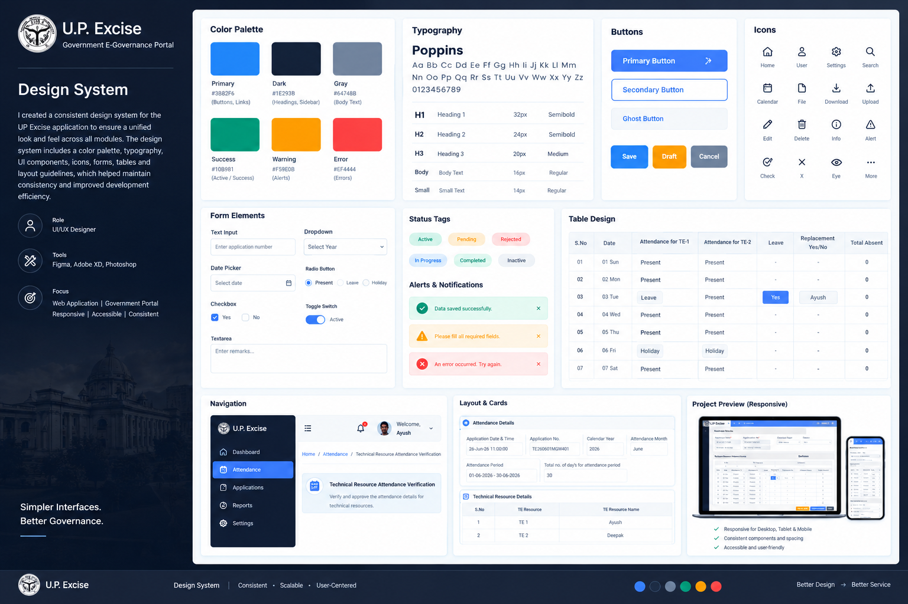
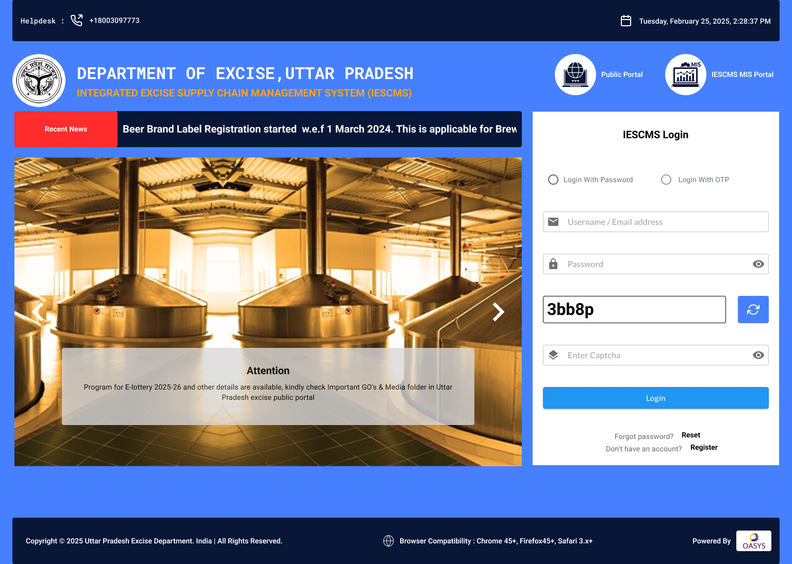
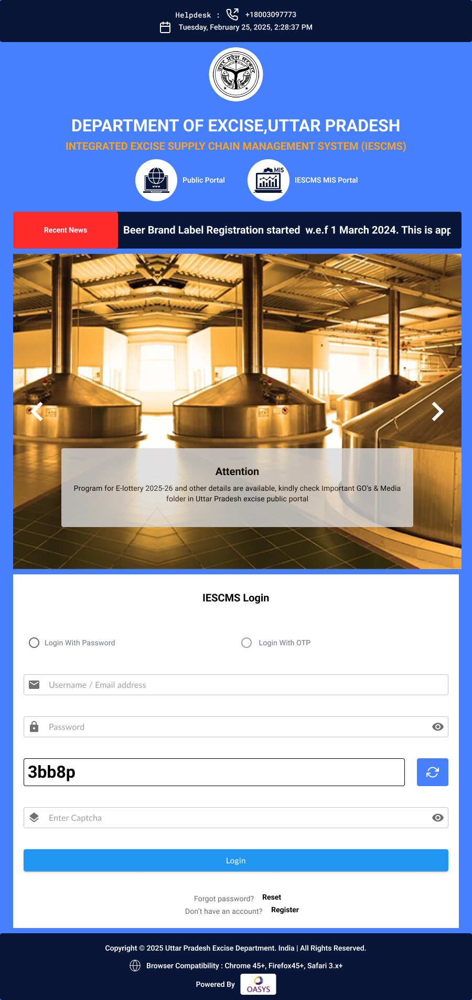
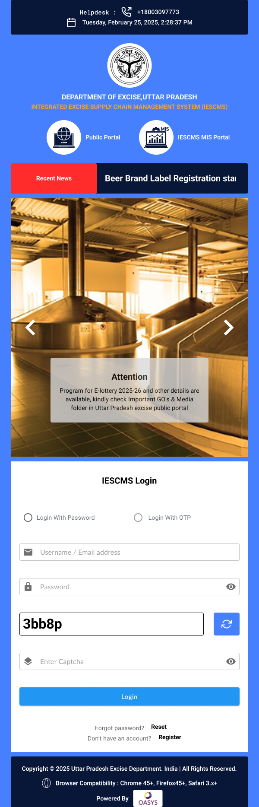
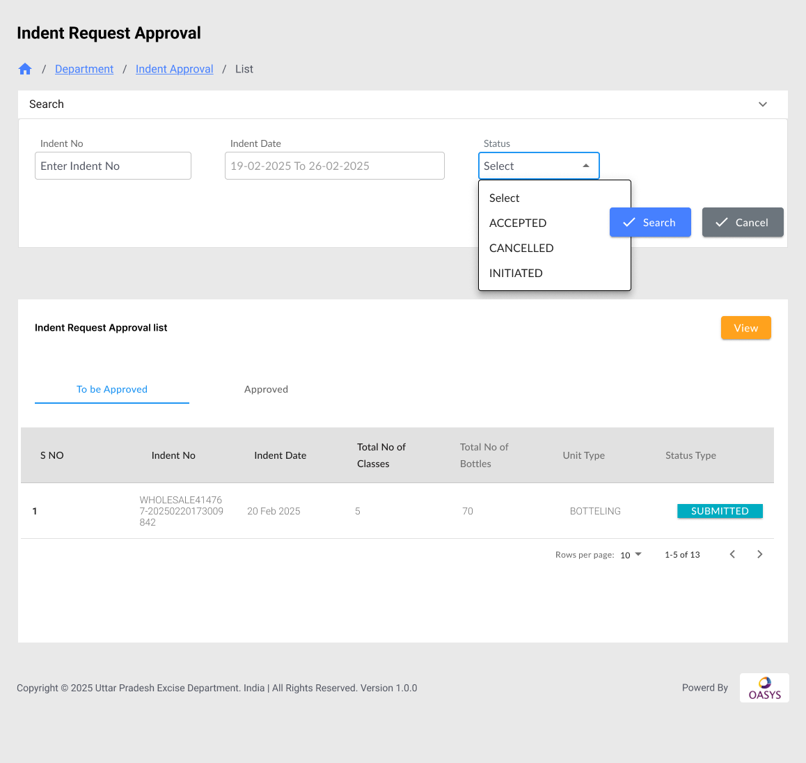
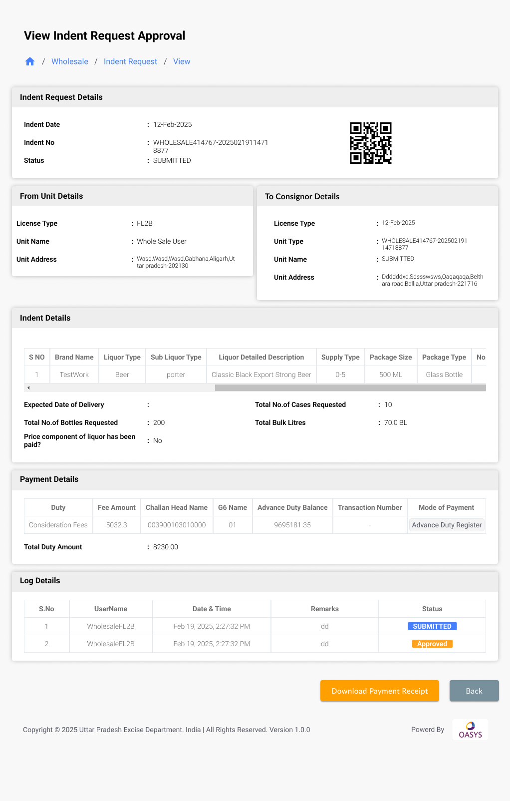
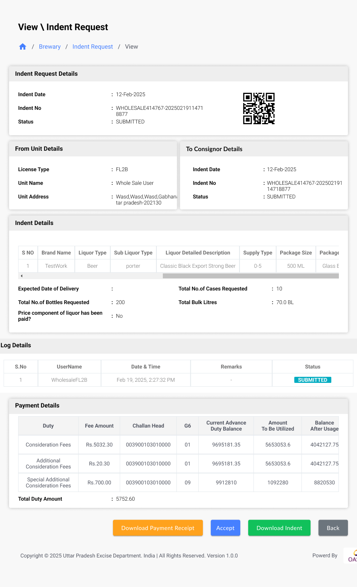
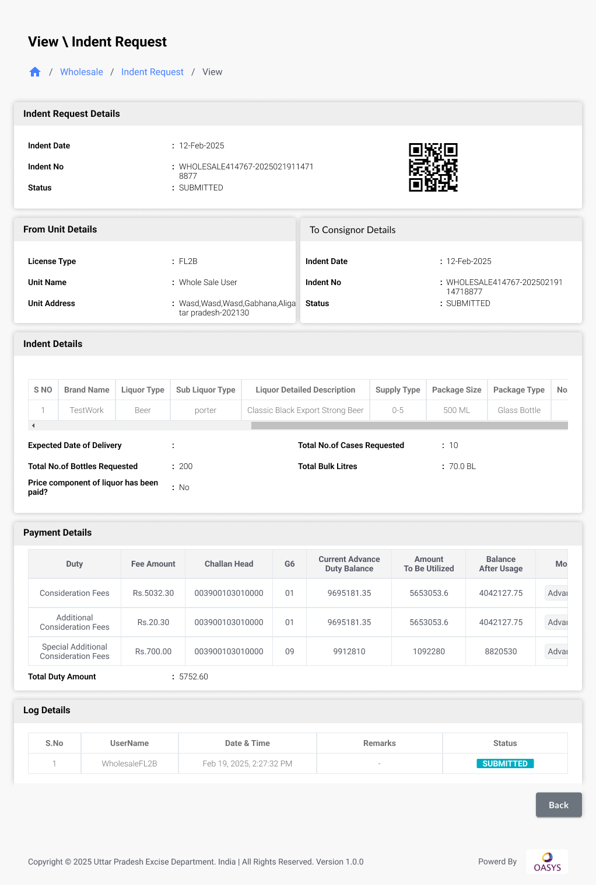
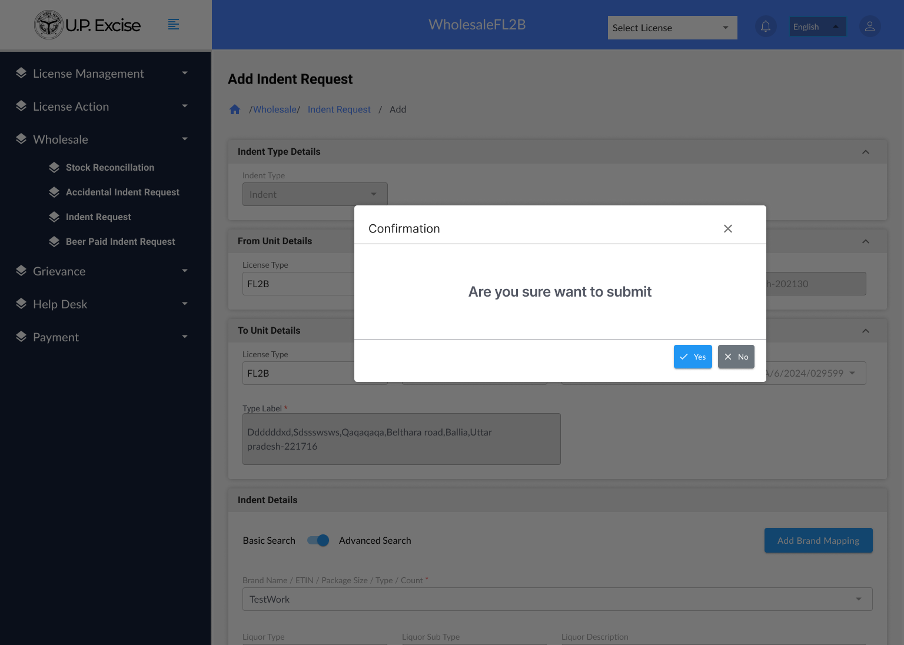
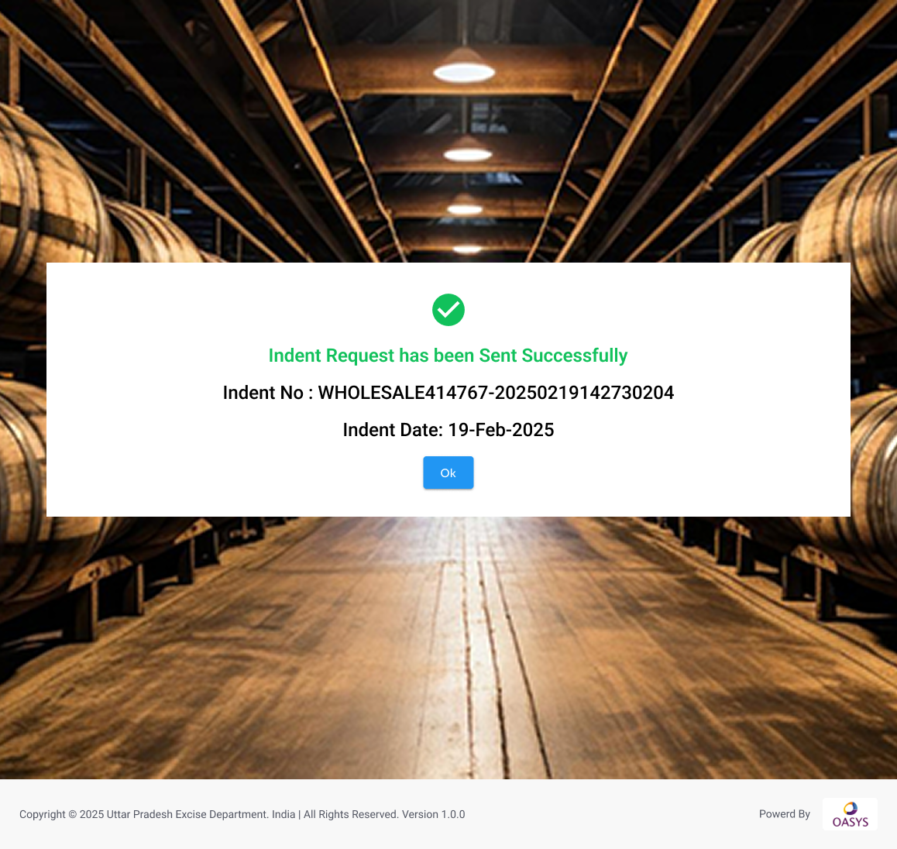

U.P. Excise Department Systems
Designing structured interfaces for complex government workflows.
UI/UX design and interface refinement across selected enterprise workflows, with the OASYS Design System providing the shared foundation for consistent visual and interaction patterns.
Client
U.P. Excise
Platform
Enterprise
Role
UI/UX Design
Focus
Workflow · Responsive UI

U.P. Excise Department Systems — selected enterprise interface experience.
Enterprise
Government workflows
Data-heavy
Records and forms
Workflow
Review and approval
Responsive
Multiple screen contexts
The brief
The U.P. Excise work involved selected interfaces within a broader government enterprise ecosystem. My contribution focused on UI/UX design for workflow-driven screens, responsive layouts and consistent interface patterns.
The work involved translating complex requirements into structured interfaces where users could review information, understand workflow states and complete operational actions with clear hierarchy.
The challenge
Government enterprise applications bring together structured records, forms, approvals, status information and operational actions. The challenge was to keep these workflows clear without losing the information required by the task.
- Organise dense information for easier scanning.
- Make workflow state and actions clear.
- Maintain consistency across related modules.
- Adapt the experience across different screen sizes.
Working with the OASYS Design System
The U.P. Excise interfaces were designed using the OASYS Design System as the shared UI foundation. Its established visual language and reusable patterns provided consistency, while individual workflows determined how those patterns were composed within each screen.

Product experience within the wider U.P. Excise ecosystem.
Design approach
Rather than treating each screen as an isolated interface, the design was approached as a connected set of operational workflows. Hierarchy, continuity and consistency guided the interface decisions.
Structure
Establish hierarchy before exposing operational detail.
Continuity
Connect overview, detail, state and action.
Consistency
Apply the shared OASYS language across workflows.
Entry experience
The entry experience establishes the interface language before users move into the operational system.

Web entry experience.

Tablet

Mobile
Approval workflow
Approval-oriented workflows move users from a record overview into detailed information for review and action. The selected screens show how these states connect within the workflow.

Approval list

Approval detail
Operational workflows
Additional operational screens extend the same interface language into brewery and wholesale workflows. Only the representative screens are shown here to keep the case study focused.

Brewery indent acceptance — representative operational view.

Wholesale beer paid indent — representative operational view.
Workflow states
Related screens maintain a consistent relationship between information, status and available actions. This allows users to understand where they are within the workflow before continuing.

Structured list experience for operational records.
Feedback & completion
Feedback states communicate the result of an action while keeping the surrounding workflow understandable.

Notification

Completion
Key design decisions
Information hierarchy
Page context, summary information, filters, records and actions were organised into clear layers so users can understand the screen before moving into operational detail.
Designing for data density
Structured columns, consistent alignment, status indicators and row-level actions help organise dense operational data without removing information required by the workflow.
Structuring complex forms
Related information is grouped into clear sections so users can understand the purpose of each part of a form and move through the workflow with greater clarity.
Workflow state visibility
Approval and operational interfaces make the current state visible so users can understand the context before taking the next action.
OASYS as the shared foundation
The OASYS Design System provided the common visual and interaction language. U.P. Excise-specific workflows were then composed within that established foundation.
Responsive continuity
Responsive layouts adapt the same interface language across web, tablet and mobile contexts while preserving the underlying information hierarchy.
Outcome
The selected U.P. Excise interfaces demonstrate a structured approach to complex government enterprise UX, combining information hierarchy, workflow states, responsive layouts and a shared design foundation.
Reflection
U.P. Excise strengthened my approach to enterprise UI/UX where information architecture, data density, workflow state and responsive behaviour need to work together.
Working with the OASYS Design System reinforced the value of a shared foundation: consistency can be maintained while each workflow still accommodates its own information and actions.
Interested in simplifying a complex enterprise experience? Get in touch — I'd be happy to discuss your product, platform or workflow.